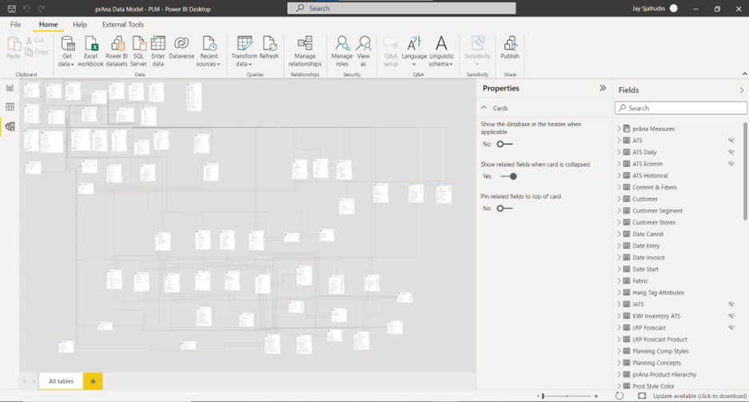

Data Analytics Projects

At a high level, data analysis is simply the process by which raw data is transformed into useful statistics, insights, and explanations to make data-driven decisions. Data analysis is quickly becoming the cornerstone of modern business operations, and I strongly believe that we will all become data connoisseurs in the near future. Here, I am sharing some of my favorite data analytic projects, achievements, and tools for BI reporting.
1) Power BI
2) tableau
3) MS Excel
4) R
5) SQL Server Reporting Services (SSRS)
6) Adobe Analytics
Power BI:
Microsoft Power BI ranks as one of my favorite data analytics software. This top business intelligence platform support dozens of data sources, allows users to perform data modeling, and create custom visualizations, calculations, reports, and dashboards. It also has an inbuilt ETL engine, Power Query (check out my data engineering projects to read more about this).
When it comes to Power BI, I have worked with and managed most if not all Power BI-related resources; from being the administrator who configures on-premises gateways and premium dedicated workspaces to the developer who builds the reports/dashboards and manages the apps, refreshes, parameters, subscriptions, endorsements, and alerts in Power BI.
During my employment with Medtronic, I had taken the lead role as a “Power BI expert” within the Global Supply Chain department of the North America Region. On the other hand, while working in Columbia Sportswear, I had also taken the responsibilities of being the administrator for Power BI within the prAna sub-group of the company. And lastly, when I was working at T-Mobile, I was also the individual who led and drove the Power BI reporting movement within the Digital Performance Analytics space of the organization.
Overall, I have held around 50 Power BI sessions, whether it is knowledge sharing or user forums, across these enterprises to about 1000 audiences in total. I have also built well over 100 reports and dashboards utilizing Power BI, many of which became one of the top/most viewed reports in these various large enterprises. Besides PBI report development, I have also built multiple data model/cube that supports 200+ reports and dashboards, cutting time for reporting in most cases by 500%.
When it comes to this data analytic software, there are 3 memorable projects I have worked on that comes to mind.
1) Connected Metrics Dashboard
(Screenshot uses dummy/mock data)
During the early stages of the COVID-19 outbreak, I had the opportunity to work with the Global Supply Chain’s IT/IS team of Medtronic in investigating the potential implications of the rising coronavirus on the economy and our product performance. As part of our mission to maximize efficiency and minimize waste, we had created the Connected Metrics Dashboard. This dashboard presents the trends of various intercorrelated balanced scorecard metrics across regions, business units, and other segments over the past year. In the process of conducting exploratory data analysis, I identified a recent anomaly for one of our products, ventilators. Within the past week itself, ventilators alone have experienced an increase of about one hundred million dollars in open orders, followed by a 17% decrease in its product availability and a 25% decrease in its shipping delivery performance in America. These results substantially deviate from any historical data that exists for this product. The forecast accuracy (a percentage that shows the precision of our forecasting tool in predicting customer unit demand two months ahead) for it is also at an all-time low, falling to 8%, indicating our organization’s obliviousness towards this occurrence. I had then programmed a dynamic visualization with python to best showcase this discovery. Subsequently, our dashboard was presented to the Vice President and other higher executives of the Global Supply Chain and was very well received.
About a week after, my father witnessed the President of the United States ordering the Secretary of Health and Human Services and the Secretary of Homeland Security to help Medtronic secure the supplies required to build ventilators and defeat the virus. Within three weeks after the U.S. President’s public order, while open orders for ventilators followed the recent trend of drastically increasing, we started to see significant improvements in its product availability and shipping delivery performance within Medtronic. Finding out the alignment between the sentiments of the U.S. President's order and the revelation from my analysis, especially in such a manner, made this an unforgettable project.
2) Forecast Change Analyzer RP
(Screenshot uses dummy/mock data)
(Screenshot uses dummy/mock data)
(Screenshot uses dummy/mock data)
The forecast change analyzer(FCA) report allows you to perform a forecast snapshot comparison between two different periods of time, showing the dollar and percentage value of the forecast change. The report can be analyzed across a variety of factors such as the different level of business units, key labels of our organization, and it shows a validation as well for the comparison of the snapshots. This is one of the most time-consuming yet rewarding reports that I have built throughout my experiences. The report ended up being top 8 most viewed out of 16,000+ reports across the enterprise.
3) Global Supply Planning
(Screenshot uses dummy/mock data)
This was one of the most memorable projects that occurred during my time with Columbia Sportswear. In collaboration with the demand and supply department of the company, we had dealt with continuous occurrences of customer orders getting canceled or delayed due to a lack of supply. In fact, within the past season itself, over half of the orders placed were either delayed or fell short due to this very reason. The objective of this report was to foresee the clothing styles expected to run out of inventory by comparing the quantity available against its demand-forecasted units. (Click here to find out how we forecast quantity demanded). This vision will allow us to place blind buys from our respective vendors accordingly and prevent running out of supply. With data insights from the GSP report, we have successfully improved margin dollars of the company. We experienced a 13% increase in on-time orders compared to the previous season. Furthermore, orders delivered past the cancel date have dropped by 17%, followed by only 4% of orders that ran out of supply.
One of the biggest advantages of Power BI is its ability to build a data model/cube that allows many other data analytic tools to connect to, such as MS Excel, tableau, etc. My Power BI experience have afforded me to actually build and endorse an enterprise level data cube that supports 200+ reports and dashboards throughout one of the most well-known apparel industries globally, cutting time for reporting in most cases by 500%.

Tableau:
Up next on my list of favorite data analytic tools is Tableau. Tableau is among the most easy-to-learn Data analytics software that perform an effective job of slicing and dicing your data and creating great visualizations and dashboards. In my view, it has some of the best interactive and intuitive visualizations compared to any reporting tool.
When it comes to tableau, I have an extensive experience with the tool from designing and delivering wireframes and visual frameworks for tableau reports at a high executive level, connecting to sources and performing data blending, creating complex calculations, all the way to developing and deploying the dashboards and user stories for data analytic insights.
Some of my favorite data analytics projects that utilized tableau include:
1) Digital Funnel
(Screenshot uses dummy/mock data)

(Screenshot uses dummy/mock data)
(Screenshot uses dummy/mock data)
The digital funnel dashboard aims to show the different funnel stages such as visits, checkouts, orders, and activations for both postpaid and prepaid lines of business in the digital/web space. Through these reports, our internal business partners have visibility of the metric values at each stage and are able to take appropriate measures to boost the digital performance of the organization.
2) Member & Provider Satisfaction Project
(Screenshot uses dummy/mock data)
(Screenshot uses dummy/mock data)
(Screenshot uses dummy/mock data)
During my employment with Health Plan of San Joaquin (HPSJ), I worked on a Member & Provider Satisfaction Project in collaboration with the COO of the company. The goal is to increase the overall satisfaction of our health plan members and providers. We developed the PCP scorecard which tracks the provider's performance against targeted KPIs to distribute incentives accordingly. We also developed the Member Panel Auto Assignment dashboard with various metrics to gauge our member’s happiness; for example, by looking at the percentage of individuals who had terminated their membership and the duration of their coverage across various factors, such as their assigned provider and the type of member groups, we can assess member satisfaction and locate areas of improvement. This project was very interesting as it was one of the first projects where I got to work with healthcare data, a sector that is leading in terms of being data-driven due to the high-quality representative data that exists.
3) Anomaly Detection Model
(Screenshot uses dummy/mock data)
During my project with one of the largest telecommunication industries in the United States, T-Mobile, I had implemented statistical methods to build an anomaly detection model for performing data quality checks. (Click here to read more about this).
MS Excel:
(Screenshot uses dummy/mock data)
MS Excel is currently the most widely used data analytics software in the world. This tool is mostly used for grunt work. Everyone has access to excel, and at a base level, it is very simple to build a quick visual or report for displaying analytical insights. Today, with PowerPivot in excel, it is becoming even more popular amongst non-analytic professionals to build quick ad-hoc reports with this software. In my view, there are also a lot of hidden gems with regards to the functionalities and computations that this software provides, for example, I was able to build a predictive analysis model to forecast sales/quantity demanded which has successfully improved margin dollars for one of the most well-known apparel industries (Click here to read more about this).
R:
(Screenshot uses dummy/mock data)
The above image is a simple Histogram with a normal curve over the data. I was first introduced to R during my undergraduate years. I had taken statistics courses that involved several probability and statistics problem sets where we had to gather numerical data and generate various graphs and charts for data analysis in R studio. R will always hold a special place in my heart as it was the first data analytical software tool I had worked with, and it was also the first programming language I had been introduced to.
SQL Server Reporting Services (SSRS):
(Screenshot uses dummy/mock data)
SQL Server Reporting Services (SSRS) is a SQL Server subsystem that enables the creation of graphical, mobile and printed reports using SQL Server and other data sources. This data analytical software has been around for a long time and still holds its name for being a powerful tool for data visualization despite its rare updates compared to other tools like Power BI or tableau.
In my perspective, when it comes to SSRS report builder, there is one main advantage that puts this software ahead, that is its export to excel functionality. Most reporting tools available in the market today has very limited export to excel functionalities. For example, when it comes to Power BI reports, you may only export to excel per visual, or when it comes to tableau reports, you may only export to excel per sheet. SSRS on the other hand allows you to not only export the entire page of a report with multiple ‘visuals’/’sheets’, but it also allows you to export multiple pages to create a story in excel. This feature will allow users to easily edit the report and perform computations on the data of the report in excel, an environment in which many executive level individuals prefer.
(Screenshot uses dummy/mock data)
Adobe Analytics:
Business moves fast with today’s pace of digital interactions with customers. Data pours in, and without some way to take advantage of it fast, it’s easy to miss golden opportunities or get a handle on a crisis before it’s too late.
During my employment with one of the largest telecommunications industries in the U.S., I was working as part of the Digital Performance Analytics team. During this time, we had used Adobe Analytics and leveraged the Live Stream feature where we had accessed hit-level, unprocessed data in near real-time (30 to 90 seconds) and used it in live-traffic dashboards. I was involved in the prepaid line of business where we built these reports that display metrics and segments such as visits, orders, and activations. This report allowed us to monitor and act quickly on potential opportunities, such as identifying the top-selling rate plans and devices to advertise, or crises, such as detecting if there are some errors with our web page.
(Screenshot uses dummy/mock data)
(Screenshot uses dummy/mock data)
Summary:
In today’s soceity with extreme data overload, the best decision makers will become data connoisseurs. Simply acting on whatever information is at hand will be replaced by a demanding approach to data. The goal will be an increasingly customized and connected flow of insights carefully chosen and speaking directly to company needs. Dashboards will be increasingly dynamic and actionable, reflecting human needs and discernment as well as AI-driven sorting. I am beyond excited to continue on this journey and effectively transform data into true value.